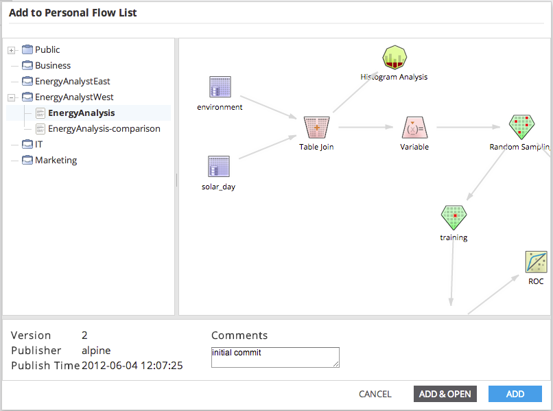

To add a flow to Personal Workflows from the public groups, begin by clicking Add to display the "Add to Personal Flow List" dialog. The left panel displays all public flows (anyone can access) and flows for groups of which the user is a member. Double clicking on a flow shows its detail in the right panel, as below.
Clicking the Add button will add the selected flow to the user's "Personal Workflows". Clicking the Add & Open button will add the flow to "Personal Workflows" and open the flow in the workbench.
